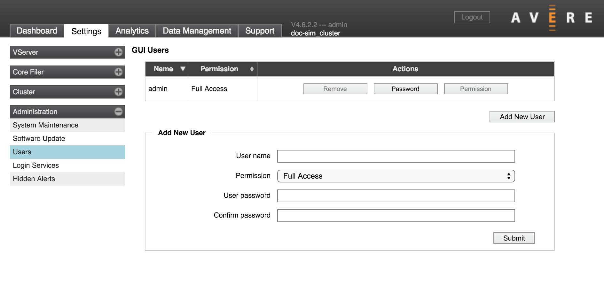
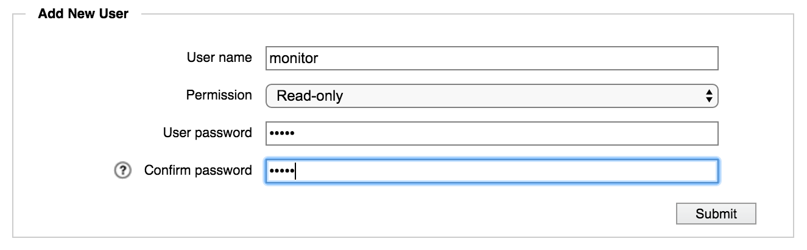

Administration > Users
{kind=link}
The Users settings page lets you configure individual usernames and passwords for logging in to the Avere Control Panel.
In addition to using this page to create individual accounts, you can use the Login Services settings page to configure LDAP- or AD-managed users and groups.
Two types of access are available for the Avere Control Panel:
- Full Access allows users to configure cluster settings as well as to monitor the cluster.
- Read-Only access allows users to monitor the cluster, but not to update the cluster configuration.
The Users page is the only method to create accounts that can monitor the cluster but cannot change settings.
User List
The top of the page shows a list of individual user accounts.

You can sort the user accounts by name or permissions.
Buttons in the Actions column can be used to change accounts:
- Remove - delete an account
- Password - change the account password
- Permission - change permissions between Full Access and Read Only
Note
You cannot change permissions for the default administrative user. There must always be a cluster administrator account defined in this page, even if you use a directory service to populate other user accounts.
To change the password for the default administrative user, you must log in as that user. Typically, the default administrative user is called “admin”.
Adding Avere Control Panel Users
When you load the Users page, the Add New User panel typically appears. If the panel does not appear, click the button labeled Add New User to load it.
{kind=link}
Enter the requested information and click Submit to create a new user account.
Note
After you click the Submit button you might be asked for the administrator password for the cluster.